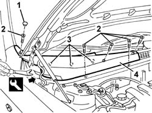
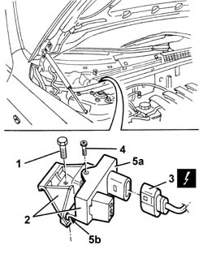

5010D72 AIR QUALITY SENSOR - R R FOLLOWING CIRCUIT CHECK
- Path
- Procedures > 50 AUXILIARY UNITS > 5010 HEATING/VENTILATION - MISCELLANEOUS > 5010D AIR TEMPERATURE RECORDING SYSTEM > 5010D72 AIR QUALITY SENSOR - R R FOLLOWING CIRCUIT CHECK
- Kind
- repair procedure (removal / refitting; the operation number is the code)
- Applies to
- engines: 2.0 JTS, 3.2 V6, 1.9 JTD 16V; all production periods
- Interactive page
- https://sloeber94.github.io/elrnDB-aGt/en/#/125001516
Applies to: engines: 2.0 JTS, 3.2 V6, 1.9 JTD 16V; all production periods
 Removing
Removing
 Refitting
RefittingOpen the bonnet lid.
1. Remove the cover.
2. Undo the bolts retaining the windscreen base right trim.
3. Release the inner retainers using the appropriate tool.
 | Name | Country |
|---|---|---|
1 | Scraper blade | 1.823.015.000 |
4. Recover the windscreen base right trim.

Applies to: engines: 2.0 JTS, 3.2 V6, 1.9 JTD 16V; all production periods
1. Undo the bolt.
2. Move the air quality sensor with mounting.
3. Disconnect the electrical connection.
Name | Connector | |
|---|---|---|
3 | Exhaust gas sensor | See K64 EXHAUST GAS SENSOR ( FRONT ) |
4. Undo the bolt.
5. Remove the sensor (5a), disengaging the retainers (5b).

Applies to: engines: 2.0 JTS, 3.2 V6, 1.9 JTD 16V; all production periods
Refitting
RemovingCheck that the air quality sensor is not damaged.
Engage the retainers and secure the sensor to the mounting with the screw.
Connect the electrical connection.
Fit the air quality sensor with mounting, then secure it with the bolt.
Fit the windscreen base right trim and engage the inner retainers.
Tighten the bolts securing the windscreen base right trim.
Fit the cover.
Close the bonnet lid.
Check the operation of the system using the Examiner or another tester.